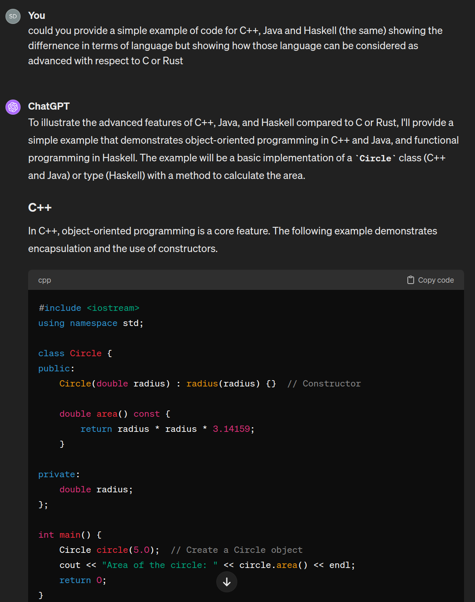

Introduction
About Computing Something
When we speak about programming language, scientific computing, from a simplistic viewpoint we want to give a meaning to \(x \mapsto f(x)\). In other terms, given an input \(x\) we want to transform this input into and output \(f(x)\).
- Examples:
-
-
A constant function \(f\) printing
Hello World:\[x \mapsto \text{``Hello World!''}\] -
A function computing the exponential of \(x\):
\[x \mapsto e^x\] -
etc.
-
Defining, using, composing functions is a natural thing for mathematicians. The question is however whether it is possible to design a machine that will accomplish this task. The idea of such a machine dates backs centuries ago, basically machine that are designed to perform basic arithmetic such as finger counting. They were of mechanical nature such as abacus, suanpan (), Pascaline or various compass and astronomical devices.
Many evolutions happened during the 19th and beginning of 20th century of mechanical nature, but the first real modern version of a computer how we know them was done by Suze around 1939-40 where he designed a computer using electric signals (with vaccum tubes) rapidly followed by the works of Turing or von Neumann. This period coincide with an intense work in the mathematical community about the foundations of mathematics.
Without entering into the history of computers and their inner functioning, let us notice the following. For mathematics one starts with logic, axiomatic set theory, then build up natural numbers \(\mathbb{N}\), rational numbers \(\mathbb{Q}\), real numbers \(\mathbb{R}\), vector spaces, manifolds, etc. and functions on each of these spaces.
If one wants to perform computations in a mathematical sense, one would need those elements.
Starting with a simple two elements logical Boolean Algebra {True, False}, it holds
- Or:
True or True = True,True or False = True,False or False = False - And:
True and True = True,True and False = False,False and False = False - Negation:
~True = False,~False = True
Boolean algebra or set theoretical viewpoint
This can be written in terms of
- \(X = \{0,1\}\) boolean algebra as \(1 + 1 = 1\) where \(1\) stands for
Trueand \(+\) foror. Same for \(0\) standing forFalse, \(*\) forand. - \(X = 2^{\emptyset}=\{\emptyset, \{\emptyset\}\}\) as \(\{\emptyset\}\cup \{\emptyset\} = \{\emptyset\}\) where \(\{\emptyset\}\) stands for
1and \(\cup\) forori. Similarly \(\emptyset\) stands for \(0\), \(\cap\) stands forandand the complement \({}^c\) stands for~.
Starting with these premises, following John von Neumann method, one can within ZF theory construct natural numbers, and from there integers, rational numbers etc. At least building a finite arithmetic.
Hence for a computer to work, one needs in the first place
- A \(0\) and \(1\) (or
False/Truestates) - The operations
or,andand~ - A way to read the input and output of those operations (challenge in quantum computing for instance which is slightly different)
As for the \(0\), \(1\), the invention of electricity allows to produce and measure presence of current (or absence thereof). As for the operations, they are generated by the invention of so transistors that can generate gates performing those operations.
The first attempts tried to get working into a decimal world, however it turns out that from this setting working in base 2 is more efficient and closer to what the circuitry allows, and since mathematically it does not matter what base is used, binary it be.
Talking to a Machine
The machine can now deal with finite arithmetic, in other terms, we can do simple \(x \mapsto f(x)\). However, it remains complicated to explain this machine
- what \(x\) (the input) is. (Convert into binary sequence)
- how it shall transform \(x\) into \(f(x)\) with such basic operations
- how to read out the output (for instance from binary to decimal and print it on a screen or record it somewhere)
This is where programming languages come into place. Like any language, they are characterized by a syntax (form) and semantics (meaning). One receiving end is the computer with a very rudimentary form (made of 0/1 and operations on it), while the other is a human with sophisticated one. Hence programming languages are often classified from low level (close to the machine language) to high level (close to human language). Here is a personal ranking of programing languages along this dimension
-
(Extremely) Low level: Those languages are the closest to the machine code instructions. They are extremely efficient as there is no overhead between the instructions and the computer. However, beyond simple but critical operations, it is virtually impossible to express more complex framework in reasonable amount of time. Classical example of which is the assembly language. Current applications are rare but very specific (flight instruments, rockets, cryptography, special algorithm).
Example of assembly languageExample: M ADD R1, ='3' where, M - Label; ADD - symbolic opcode; R1 - symbolic register operand; (='3') - Literal Assembly Program: Label Op-code operand LC value(Location counter) JOHN START 200 MOVER R1, ='3' 200 MOVEM R1, X 201 L1 MOVER R2, ='2' 202 LTORG 203 X DS 1 204 END 205 -
Low level: Those programming languages are also of procedural nature but with a more natural syntax and semantic with advanced multipurpose functionalities (control flows, recursion, functions, or advanced data structure). They remain close enough to the machine to be very efficient and do not allow for higher level concepts (templating, objects, etc) and require care how to handle memory. Typical examples are
FORTRAN,Cor more recentlyRust,CUDA. They are still very widely used as they are the backbones of many infrastructures and operating system (Linux for instance) as well as scientific libraries.program fibonacci implicit none integer :: n, i integer, allocatable :: fib(:) print *, 'Enter the number of terms:' read *, n allocate(fib(n)) fib(1) = 0 if (n > 1) fib(2) = 1 do i = 3, n fib(i) = fib(i-1) + fib(i-2) end do print *, 'Fibonacci sequence:' do i = 1, n print *, fib(i) end do deallocate(fib) end program fibonacci#include <stdio.h> void fibonacci(int n) { int t1 = 0, t2 = 1, nextTerm; for (int i = 1; i <= n; ++i) { printf("%d, ", t1); nextTerm = t1 + t2; t1 = t2; t2 = nextTerm; } } int main() { int n; printf("Enter the number of terms: "); scanf("%d", &n); printf("Fibonacci Sequence: "); fibonacci(n); return 0; }fn fibonacci(n: u32) -> u32 { let (mut a, mut b) = (0, 1); for _ in 0..n { let temp = a; a = b; b = temp + b; } a } fn main() { let n = 10; // Example: first 10 Fibonacci numbers for i in 0..n { println!("{}", fibonacci(i)); } }- Medium level:
With more complex needs and larger projects, languages have been extended in terms of functionalities such as memory managment, object oriented or functional programing.
On the one hand, they often remove many difficulties related to lower level languages such as addressing and managing the memory, implement asynchronous or parallel programing, and make use of objects or more general structures.
They are tons of such languages with each its own philosohy, most wiedely known are
C++,Java,Haskell(functional programming language),JavaScript(web oriented), etc. They are still very efficient and used in infrastructure or many web related applications.
#include <iostream> using namespace std; class Circle { public: Circle(double radius) : radius(radius) {} // Constructor double area() const { return radius * radius * 3.14159; } private: double radius; }; int main() { Circle circle(5.0); // Create a Circle object cout << "Area of the circle: " << circle.area() << endl; return 0; }public class Circle { private double radius; public Circle(double radius) { this.radius = radius; } public double area() { return radius * radius * Math.PI; } public static void main(String[] args) { Circle circle = new Circle(5.0); System.out.println("Area of the circle: " + circle.area()); } }data Circle = Circle Double -- Circle type with a single constructor area :: Circle -> Double area (Circle radius) = pi * radius ^ 2 main :: IO () main = print $ area $ Circle 5.0- Higher level:
Those programing language takes the previous level type but focus on simplifying the syntax and semantics, removing lot of the compilation/debugging work as well as static typing requirements (specifying the neture of all variable before use).
They are also by definition very dynamic (objects can be declared at running time) and interpreted (scripting language).
Paramount example of which is
Pythonbut alsoLua,Ruby, etc. They are also programming languages with specific application at hand such asR,Matlab,Mathematica.
import numpy as np # Define an array of numbers data = np.array([1, 2, 3, 4, 5]) # Calculate the mean and standard deviation mean = np.mean(data) std_dev = np.std(data) print("Mean:", mean) print("Standard Deviation:", std_dev)# Define a vector of numbers data <- c(1, 2, 3, 4, 5) # Calculate the mean and standard deviation mean <- mean(data) std_dev <- sd(data) print(paste("Mean:", mean)) print(paste("Standard Deviation:", std_dev))% Define an array of numbers data = [1, 2, 3, 4, 5]; % Calculate the mean and standard deviation mean_val = mean(data); std_dev = std(data); disp(['Mean: ', num2str(mean_val)]) disp(['Standard Deviation: ', num2str(std_dev)])- **(Extremely) high level:
ChatGPT. This is not really a programming language but as a large langage model it can perform the task of converting natural langage into code. More advanced models such as google code are trained to design algorithm that are more efficient than those written by human beings. 
- Medium level:
With more complex needs and larger projects, languages have been extended in terms of functionalities such as memory managment, object oriented or functional programing.
On the one hand, they often remove many difficulties related to lower level languages such as addressing and managing the memory, implement asynchronous or parallel programing, and make use of objects or more general structures.
They are tons of such languages with each its own philosohy, most wiedely known are
As you can see, ChatGPT or more generally those LLM are game changer on how we approach programming languages.
So why shall we learn how to program?
In the end it is not necessary anymore to have a large proficiency in low or middle level programming languages.
However, it is important to understand how a machine is generating output, how to design programs and then ask any AI to help you along the way.